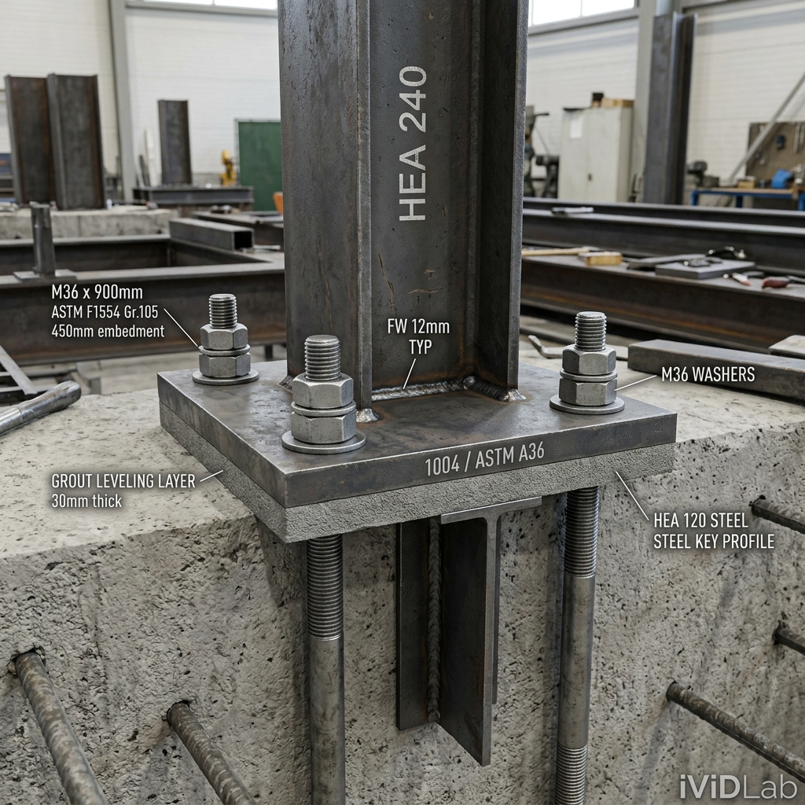
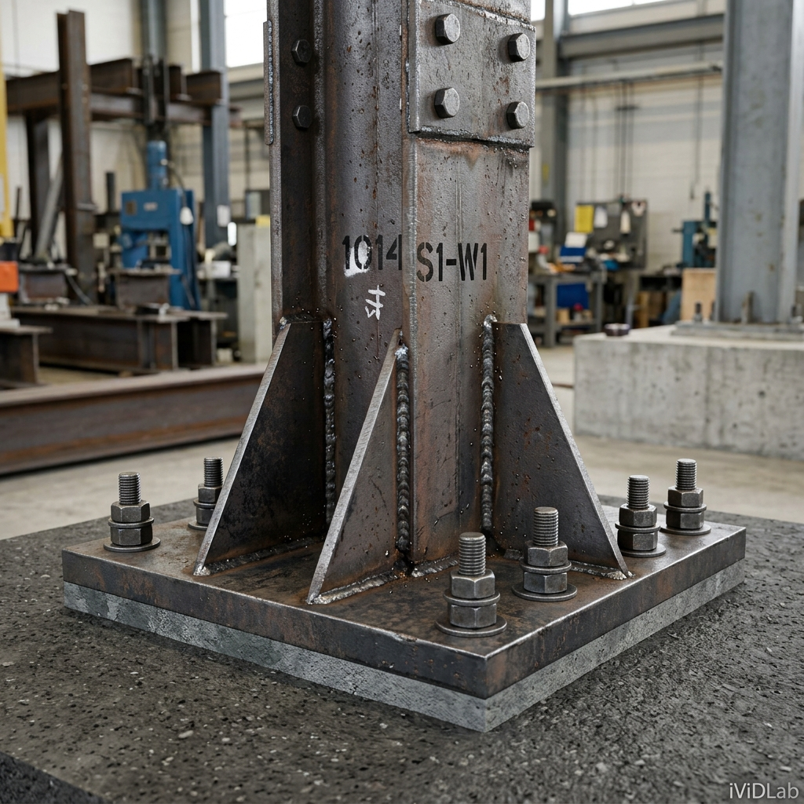
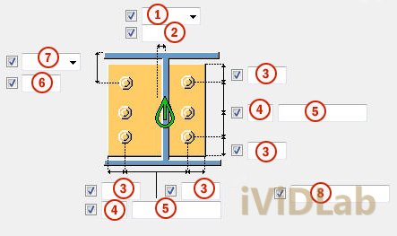
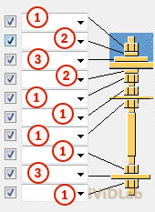
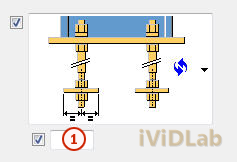

Hướng dẫn làm chủ Base Plate (1004) & Stiffened Base Plate (1014) nâng caoMastering Advanced Base Plate (1004) & Stiffened Base Plate (1014) in Detail
Chuyên mục: Tekla StructuresCategory: Tekla Structures•Ngày đăng: 24/05/2026Published: May 24, 2026•Tác giả: iViDLab TeamAuthor: iViDLab Team


Mẹo chuyên gia: Đối với component 1014, bạn có thể kiểm soát chính xác góc vát của sườn gia cường và độ hở (clearance) giữa sườn và cánh cột để thuận tiện cho đường hàn.

Chi tiết sườn gia cường

Cấu hình bulong neo

Lớp vữa và đệm
2. Tối ưu hóa việc sử dụng iViDLab Attributes
Đừng quên tải và sử dụng các thuộc tính (attributes) đã được chuẩn hóa bởi iViDLab cho các component này để đảm bảo sự đồng bộ trong toàn bộ dự án của bạn.
Detailing base plate connections with stiffeners is a frequent requirement in structures subjected to heavy loads or high bending moments. Mastering Tekla Structures components such as Base Plate (1004) and Stiffened Base Plate (1014) will enable you to model accurately and swiftly.
This article by the iViDLab Team, extracted from the TS_COMP_2025_en_System components.pdf document, provides detailed instructions on how to define and control every attribute of these base plates.
1. Advanced Base Plate Configuration
Unlike simple column base connections, Base Plate (1004) and Stiffened Base Plate (1014) offer profound customization capabilities for reinforcement details like stiffeners, shear keys (gussets), and various anchor bolt formats.
Pro Tip: For component 1014, you can precisely control the chamfer angle of the stiffener and the clearance between the stiffener and the column flange to facilitate welding.
Stiffener Details
Anchor Bolt Configuration
Grout and Shim Plates
2. Optimizing with iViDLab Attributes
Don't forget to download and use the standardized attributes provided by iViDLab for these components to ensure consistency across your entire project.